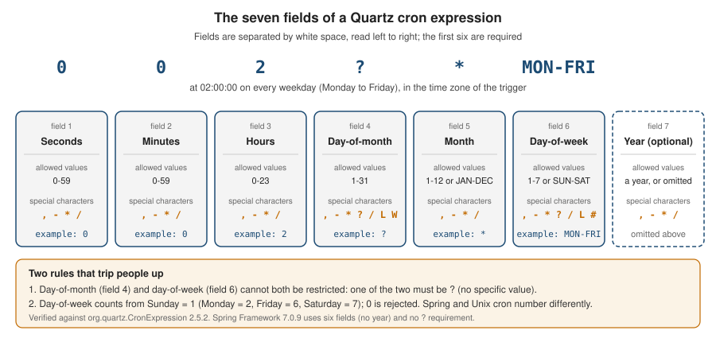

Cron Expressions
|
This content was generated with the assistance of AI and should be verified against the official documentation before being relied on in production. |
A cron expression is a compact string that describes a recurring schedule. Quartz uses it in the CronTrigger (see
Triggers and Schedules for the other trigger types), Spring uses a
close relative of it in @Scheduled(cron = …) and in org.springframework.scheduling.support.CronExpression, and Unix
cron and the Kubernetes CronJob use a third, shorter dialect. The three dialects look alike and are not the same:
copying an expression from one to another is the most common source of a job that runs on the wrong day, every second, or
never. This page defines the Quartz grammar, shows how to validate and preview an expression with the CronExpression API,
explains time zones and daylight-saving transitions, and translates between the dialects. For where a cron schedule fits
among the other options, see
Standard Scheduling vs Quartz; for what happens when a fire
time is missed, see Misfires.
It was written against Quartz 2.5.2, Spring Boot 4.1.1, Spring Framework 7.0.9 and Java 21 and verified on 5 October 2026:
every expression below was parsed and evaluated with org.quartz.CronExpression.getNextValidTimeAfter (Quartz 2.5.2) and,
for the Spring column, with org.springframework.scheduling.support.CronExpression.next (Spring Framework 7.0.9) in a
test project, and the fire times quoted are the measured ones. The Unix and Kubernetes columns are taken from the
crontab(5) manual page and the Kubernetes documentation and were not executed. The Quartz cron grammar is part of Quartz
itself, so it is identical on Spring Boot 3.5.16 (which also manages Quartz 2.5.2); the Spring column was measured on Spring
Framework 7.0.9 only, and Spring Boot 3.5 uses Spring Framework 6.2.19.
In the running Bookshelf scenario, three of the five jobs are cron-driven: the nightly overdue-loan reminders, the weekly statistics report and the monthly retention cleanup. The cache refresh is a fixed-rate job and the per-member reminders are one-shot triggers, so neither needs cron.

The grammar
A Quartz expression has six required fields and one optional field, separated by white space. The order is fixed, and unlike Unix cron it starts with seconds.
| Position | Field | Allowed values | Special characters |
|---|---|---|---|
1 |
Seconds |
|
|
2 |
Minutes |
|
|
3 |
Hours |
|
|
4 |
Day-of-month |
|
|
5 |
Month |
|
|
6 |
Day-of-week |
|
|
7 |
Year (optional) |
a year, or omitted |
|
Names and special characters are case-insensitive: 0 0 12 ? * mon-fri is accepted, and toString() returns it in upper
case. Out-of-range values are rejected when the expression is parsed, with a java.text.ParseException: hour 24
("Hour values must be between 0 and 23"), second or minute 60 ("Minute and Second values must be between 0 and 59") and
month 13 ("Month values must be between 1 and 12") all fail.
The Javadoc of CronExpression in 2.5.2 still says that the month field is 0-11. The parser disagrees: month 0 is
rejected ("Month values must be between 1 and 12") and month 12 is accepted and means December. Trust the parser, and
prefer the JAN-DEC names, which cannot be misread.
Special characters
| Character | Fields | Meaning | Example and measured result |
|---|---|---|---|
|
all |
Every value of the field. |
|
|
day-of-month, day-of-week |
"No specific value": used in whichever of the two day fields you are not restricting. |
|
|
all |
An inclusive range. |
|
|
all |
A list of values or ranges. |
|
|
all |
An increment: |
|
|
day-of-month, day-of-week |
"Last". In day-of-month: the last day of the month; |
|
|
day-of-month |
"Nearest weekday" to the given day. It never crosses a month boundary. |
|
|
day-of-month |
The last weekday (Monday to Friday) of the month. |
|
|
day-of-week |
"The nth such weekday of the month": |
|
Two practical points about L and the others. First, the combinations the parser does not implement are rejected rather
than guessed: 6L,2 (an L weekday plus another weekday) fails with "Support for specifying 'L' with other days of the
week is not implemented". Second, the parser is more permissive than the documentation: L,15 in day-of-month is accepted
and works (it fires on the 15th and on the last day), but W combined with a range, such as 10-20W, is accepted and
produces consecutive days including weekends, which is not "nearest weekday". The Javadoc says not to combine L or W
with lists or ranges; follow it.
The 2.5.1 change to L
In the 2.5.0 release candidates a refactoring broke L and L-n in months with fewer than 31 days, so that "last day of
the month" schedules never fired in short months. The fix is pull request #1284, "Fix regression: 'L' last day of month
specifier with short months won’t be triggered", in the Quartz 2.5.1 milestone. On 2.5.2 the behaviour is correct, and it
was measured across a leap-year boundary:
| Expression | Fire times |
|---|---|
|
2027-02-28, 2027-03-31, 2027-04-30, 2027-05-31, and later 2028-02-29 |
|
2027-02-27, 2027-03-30, 2027-04-29, 2027-05-30 |
|
Friday 2027-02-26, Wednesday 2027-03-31, Friday 2027-04-30, Monday 2027-05-31 |
The same expressions on Quartz 2.4.1 give the same dates. The 2.5.0 and 2.5.1 artifacts were not run for this page, so the broken behaviour itself is quoted from the pull request, not reproduced. The practical advice is simple: on Spring Boot 4.1 and 3.5.16 the starter manages Quartz 2.5.2, so you are not affected; if you pin Quartz yourself, do not stay on 2.5.0.
The ? rule
Quartz cannot combine a day-of-month restriction with a day-of-week restriction (Unix cron would run the job when either
matches). Instead, exactly one of the two fields must be ?, which means "I do not care about this field".
| Expression | Valid? | Result |
|---|---|---|
|
yes |
Every day at 02:00. |
|
yes |
Weekdays at 02:00. |
|
yes |
The 1st of every month at 03:30. |
|
no |
"Support for specifying both a day-of-week AND a day-of-month parameter is not implemented." |
|
no |
Same message: "Friday the 13th" cannot be written in one Quartz expression. |
|
no |
"'?' can only be specified for Day-of-Month -OR- Day-of-Week." |
If you need "Friday the 13th", use a CronTrigger on the 13th (0 0 12 13 * ?) and let the job check the day of the week,
or use a Calendar (see Calendars).
The CronExpression API
org.quartz.CronExpression is a standalone parser and evaluator. You can use it without a scheduler
to validate user-supplied schedules, to preview fire times in a UI and to test trigger definitions. The members used in
this page, all checked against the 2.5.2 source and run:
| Member | Behaviour (measured) |
|---|---|
|
Parses the expression, throws |
|
|
|
Throws the |
|
The first fire time strictly after the argument, in the expression’s time zone, or |
|
The first second after the argument that does not match; from Monday 02:00:00 with |
|
The fire time before the argument. Added in 2.5.1 (pull request #1350); from Monday 12:00 it returns Monday 02:00. |
|
|
|
The zone in which the fields are read. If you never set it, |
|
Not implemented: the source says "NOT YET IMPLEMENTED" and it always returns |
|
A multi-line dump of the parsed sets ( |
The two helpers below are the ones worth keeping in a project: one that fails fast with a readable message, and one that previews the next fire times in an explicit zone.
import org.quartz.CronExpression;
import java.text.ParseException;
import java.time.ZoneId;
import java.time.ZonedDateTime;
import java.util.ArrayList;
import java.util.Date;
import java.util.List;
import java.util.TimeZone;
public final class CronSupport {
private CronSupport() { }
/** Fails fast with the parser's message, e.g. when a schedule comes from configuration. */
public static void requireValidCron(String expression) {
try {
CronExpression.validateExpression(expression);
} catch (ParseException e) {
throw new IllegalArgumentException(
"Invalid Quartz cron '" + expression + "': " + e.getMessage(), e);
}
}
/** The next {@code count} fire times after {@code after}, read in {@code zone}. */
public static List<ZonedDateTime> nextFireTimes(String expression, ZoneId zone,
ZonedDateTime after, int count) throws ParseException {
CronExpression cron = new CronExpression(expression);
cron.setTimeZone(TimeZone.getTimeZone(zone));
List<ZonedDateTime> result = new ArrayList<>();
Date next = Date.from(after.toInstant());
for (int i = 0; i < count; i++) {
next = cron.getNextValidTimeAfter(next);
if (next == null) {
break; // the expression never fires again
}
result.add(next.toInstant().atZone(zone));
}
return result;
}
}Source: Quartz 2.5.x API: CronExpression
Running these on Friday 2026-10-09 12:00 in Europe/Madrid gives exactly what the expression promises:
requireValidCron("0 0 2 * * *")
-> IllegalArgumentException: Invalid Quartz cron '0 0 2 * * *': Support for specifying both a day-of-week AND a
day-of-month parameter is not implemented.
nextFireTimes("0 0 2 ? * MON-FRI", Europe/Madrid, 2026-10-09T12:00, 3)
-> [2026-10-12T02:00+02:00, 2026-10-13T02:00+02:00, 2026-10-14T02:00+02:00]Using an expression in a trigger
CronScheduleBuilder.cronSchedule(String) validates the expression and throws a RuntimeException ("CronExpression '…'
is invalid.", with the ParseException as the cause) if it is wrong. Without inTimeZone, the trigger uses the JVM default
zone (measured); in a service that moves between hosts or containers, always set the zone.
import org.quartz.CronScheduleBuilder;
import org.quartz.CronTrigger;
import org.quartz.TriggerBuilder;
import java.util.TimeZone;
class BookshelfTriggers {
static CronTrigger overdueTrigger() {
return TriggerBuilder.newTrigger()
.withIdentity("overdueLoanRemindersTrigger", "bookshelf")
.forJob("overdueLoanReminders", "bookshelf")
.withSchedule(CronScheduleBuilder.cronSchedule("0 0 2 ? * MON-FRI")
.inTimeZone(TimeZone.getTimeZone("Europe/Madrid"))
.withMisfireHandlingInstructionFireAndProceed())
.build();
}
}
// overdueTrigger().getCronExpression() -> 0 0 2 ? * MON-FRI
// overdueTrigger().getTimeZone().getID() -> Europe/Madrid
// first fire after Fri 2026-10-09 12:00 -> 2026-10-12T02:00+02:00[Europe/Madrid]The builder also has shortcuts that generate the expression for you. Their output, measured, shows how they number days:
dailyAtHourAndMinute(2, 0) produces 0 0 2 ? * *, weeklyOnDayAndHourAndMinute(DateBuilder.MONDAY, 6, 0) produces
0 0 6 ? * 2 (DateBuilder.MONDAY is 2), monthlyOnDayAndHourAndMinute(1, 3, 30) produces 0 30 3 1 * ? and
atHourAndMinuteOnGivenDaysOfWeek(2, 0, DateBuilder.MONDAY, DateBuilder.FRIDAY) produces 0 0 2 ? * 2,6. Use the
DateBuilder constants rather than raw numbers, and the page Triggers and Schedules for the rest of the builders.
The Spring side
Spring has its own parser. @Scheduled(cron = …) takes a Spring expression and an optional zone; the default zone is
the empty string, meaning the server’s local zone. The special value - (the constant Scheduled.CRON_DISABLED) turns
the task off, which is handy with a property placeholder.
import org.springframework.scheduling.annotation.Scheduled;
import org.springframework.scheduling.support.CronExpression;
import java.time.ZonedDateTime;
class Reminders {
@Scheduled(cron = "0 0 2 * * MON-FRI", zone = "Europe/Madrid")
void overdueLoanReminders() { /* ... */ }
// a "-" value disables the task, e.g. in a profile that must not run it
@Scheduled(cron = "${bookshelf.statistics.cron:-}", zone = "Europe/Madrid")
void weeklyStatistics() { /* ... */ }
}
class SpringCron {
static ZonedDateTime nextOverdueReminder(ZonedDateTime after) {
return CronExpression.parse("0 0 2 * * MON-FRI").next(after);
}
}
// nextOverdueReminder(2026-10-09T12:00 Europe/Madrid) -> 2026-10-12T02:00+02:00[Europe/Madrid] (measured)The annotation compiles and its cron() and zone() values read back as written; the - constant is checked. The
placeholder form was not executed in an application context on this page.
Time zones and daylight saving
A cron expression has no time zone of its own: the zone belongs to the trigger (Quartz setTimeZone /
inTimeZone) or to the annotation (zone). The same expression therefore fires at different instants in different zones.
| Zone | Next fire (UTC) |
|---|---|
|
2026-10-06T02:00:00Z |
|
2026-10-06T00:00:00Z |
|
2026-10-06T06:00:00Z |
|
2026-10-05T20:30:00Z |
Daylight-saving transitions create two special days. In Europe/Madrid in 2026 the clocks went forward on 29 March (02:00 became 03:00, so 02:00-02:59 does not exist) and back on 25 October (03:00 became 02:00, so 02:00-02:59 happens twice). The measured behaviour of both engines:
| Expression | Quartz 2.5.2 | Spring Framework 7.0.9 |
|---|---|---|
|
Skipped: 28 March 02:30, then 30 March 02:30. |
Skipped: same as Quartz. |
|
Fires 29 March 03:30+02:00. |
Same. |
|
Fires only 03:00+02:00. |
Same. |
|
Fires once, 02:30+01:00 (the second occurrence). |
Fires twice: 02:30+02:00 and 02:30+01:00. |
|
02:00+01:00 and 03:00+01:00. |
02:00+02:00, 02:00+01:00 and 03:00+01:00. |
|
Unaffected on both days. |
Unaffected. |
The consequences are practical. A nightly job at 02:30 in a DST zone silently skips one night a year, whereas 0 30 3 * * ?
fired on both transition days in the measurements above. A job that must run exactly once per day should be scheduled
outside the 02:00-02:59 window of the zone, or in UTC. A job that is
not safe to run twice must be idempotent if it runs under Spring’s cron, because on the repeated day Spring fires it twice
(under Quartz it fires once). An unreleased change on the Quartz main branch touches the fall-back handling in
CronExpression, and it is not in 2.5.2, so the table above is what you get today.
Interval-style expressions (0 0/30 * * * ?) follow wall-clock fields, not elapsed time. If you need "every 90 minutes of
elapsed time" regardless of the clock, cron is the wrong tool; see the next sections and
Triggers and Schedules.
Source: Quartz Cron Trigger Tutorial
Quartz, Spring and Unix/Kubernetes side by side
The table lists what differs. The Quartz and Spring columns were measured; the Unix and Kubernetes columns come from the crontab(5) manual page and the Kubernetes CronJob documentation and were not run.
| Aspect | Quartz 2.5.2 | Spring Framework 7.0.9 | Unix crontab(5) | Kubernetes CronJob |
|---|---|---|---|---|
Fields |
6 plus an optional year (7th). A 5-field expression is invalid ("Unexpected end of expression."). |
Exactly 6, no year. 5 fields is invalid ("must consist of 6 fields (found 5 …"), and so is a 7th year field. |
5: minute, hour, day-of-month, month, day-of-week. |
5, as in the documentation’s field table. |
Seconds |
First field, |
First field, |
Not supported. |
Not supported. |
Day-of-week numbering |
|
|
|
|
Day names |
|
|
First three letters, any case. |
Not stated on the page. |
Month numbering |
|
|
|
|
Day-of-month and day-of-week both restricted |
Invalid: one must be |
Allowed, and both must match: |
Allowed, and the job runs when either field matches. |
Not stated on the page; test before relying on it. |
|
Required in one day field; invalid in both. |
Accepted in either day field, and in both ( |
Not a cron character. |
Accepted, "the same meaning as an asterisk". |
|
Supported (see the special characters table). |
Supported: |
Not documented. |
Not documented. |
Macros |
None: |
|
|
|
Overflowing ranges ( |
Accepted: |
Rejected ("Minimum value must be less than maximum value"). |
Not specified. |
Not specified. |
Increment of 60 or more |
Rejected: |
Accepted: |
Not applicable. |
Not applicable. |
Time zone |
Per trigger ( |
Per call ( |
The system zone of the cron daemon. |
The |
To translate by hand, shift the day-of-week and fix the day fields. The Bookshelf schedules, in all four dialects:
| Job | Quartz | Spring | Unix or Kubernetes | Notes |
|---|---|---|---|---|
Overdue-loan reminders, weekdays 02:00 |
|
|
|
Kubernetes also needs |
Weekly statistics, Monday 06:00 |
|
|
|
As a number, Monday is |
Retention cleanup, last weekday 03:30 |
|
|
not expressible |
Unix and Kubernetes have no |
Use MON-SUN names whenever the expression has to survive a copy between dialects: a name means the same weekday in
all three, a number does not.
A cookbook of annotated expressions
Every row was run: the last column is the first fire time after Monday 2026-10-05 12:00 in Europe/Madrid (so "the next
one" is always in the future), computed with CronExpression.getNextValidTimeAfter for the Quartz column and
CronExpression.next for the Spring column. A dash in the Spring column means the Spring parser rejects that form.
| # | Quartz | Spring | What it does | First fire |
|---|---|---|---|---|
1 |
|
|
Every 10 seconds, at seconds 0, 10, …, 50. |
Mon 12:00:10 |
2 |
|
|
Every minute, on the minute. |
Mon 12:01:00 |
3 |
|
|
Four times an hour, at minutes 5, 20, 35 and 50. |
Mon 12:05:00 |
4 |
|
|
Every 15 minutes during office hours, weekdays (last fire 17:45). |
Mon 12:15:00 |
5 |
|
|
Every hour, on the hour. |
Mon 13:00:00 |
6 |
|
|
Every six hours: 00:00, 06:00, 12:00, 18:00. |
Mon 18:00:00 |
7 |
|
|
Three fixed times a day. |
Mon 18:00:00 |
8 |
|
|
Hourly from 09:00 to 17:00 on weekdays. |
Mon 13:00:00 |
9 |
|
|
Every day at 10:15. |
Tue 10:15:00 |
10 |
|
|
Nightly at 02:00. |
Tue 02:00:00 |
11 |
|
|
Nightly at 02:00 on business days (the overdue-loan reminders). |
Tue 02:00:00 |
12 |
|
|
Weekdays at noon, written with numbers: Monday is |
Tue 12:00:00 |
13 |
|
|
Mondays at 06:00 (the weekly statistics report). |
Mon 2026-10-12 06:00 |
14 |
|
|
Saturdays at midnight; |
Sat 2026-10-10 00:00 |
15 |
|
|
Sundays at midnight; |
Sun 2026-10-11 00:00 |
16 |
|
|
The 1st of every month at 03:30. |
Sun 2026-11-01 03:30 |
17 |
|
|
Every other day starting on the 1st; the count restarts each month, so 31 October is followed by 1 November. |
Wed 2026-10-07 12:00 |
18 |
|
|
The last day of the month. |
Sat 2026-10-31 12:00 |
19 |
|
|
Three days before the end of the month. |
Wed 2026-10-28 12:00 |
20 |
|
|
The last weekday of the month at 03:30 (the retention cleanup); 2026-11-30 is a Monday, 2026-10-31 a Saturday. |
Fri 2026-10-30 03:30 |
21 |
|
|
The weekday nearest the 15th. |
Thu 2026-10-15 12:00 |
22 |
|
|
The third Friday of the month ( |
Fri 2026-10-16 12:00 |
23 |
|
|
The last Friday of the month ( |
Fri 2026-10-30 12:00 |
24 |
|
|
The fifth Wednesday: only in months that have one, so after October the next fires are 2026-12-30 and 2027-03-31. |
Wed 2026-12-30 12:00 |
25 |
|
|
Mondays and Wednesdays, January to March only. |
Mon 2027-01-04 12:00 |
26 |
|
|
|
Thu 2027-07-01 00:00 |
27 |
|
- |
An overflowing range: 22:00, 23:00, 00:00, 01:00 and 02:00. In Spring, list the hours instead. |
Mon 22:00:00 |
28 |
|
- |
Once only, using the optional year field; after it, |
Tue 2030-01-01 00:00 |
Expressions 11, 13 and 20 are the three Bookshelf cron jobs. They run from the Spring Boot
spring-boot-starter-quartz setup shown in
Getting Started with Spring Boot; a holiday calendar for the
reminders is added in Calendars.
Two cookbook recipes from the Quartz documentation cannot be written as cron at all: "every 90 minutes" (increments of 60
or more are rejected, and an hourly pattern is not 90-minute spacing) and "every other week" (cron has no concept of weeks
since a start date). Both are SimpleTrigger or CalendarIntervalTrigger schedules.
Source: Quartz Cron Trigger Tutorial
Testing an expression
Put every production expression under a unit test that states the fire times you expect. It costs a few lines, it needs no
scheduler and it catches the Sunday-numbering and ? mistakes before deployment.
import org.junit.jupiter.api.Test;
import java.time.ZoneId;
import java.time.ZonedDateTime;
import java.util.List;
import static org.junit.jupiter.api.Assertions.assertEquals;
class BookshelfCronTest {
private static final ZoneId MADRID = ZoneId.of("Europe/Madrid");
@Test
void overdueRemindersRunOnBusinessDays() throws Exception {
ZonedDateTime friday = ZonedDateTime.of(2026, 10, 9, 12, 0, 0, 0, MADRID);
List<ZonedDateTime> times =
CronSupport.nextFireTimes("0 0 2 ? * MON-FRI", MADRID, friday, 3);
assertEquals(List.of(
ZonedDateTime.of(2026, 10, 12, 2, 0, 0, 0, MADRID),
ZonedDateTime.of(2026, 10, 13, 2, 0, 0, 0, MADRID),
ZonedDateTime.of(2026, 10, 14, 2, 0, 0, 0, MADRID)), times);
}
@Test
void aOneOffYearExpressionStopsFiring() throws Exception {
ZonedDateTime friday = ZonedDateTime.of(2026, 10, 9, 12, 0, 0, 0, MADRID);
assertEquals(1, CronSupport.nextFireTimes("0 0 0 1 1 ? 2030", MADRID, friday, 5).size());
}
}Source: Quartz 2.5.x API: CronExpression
Both tests passed on the baseline. The testing page, Testing Scheduled Jobs, builds on
this with TriggerUtils.computeFireTimes and integration tests with a running scheduler.
Pitfalls
| Mistake | What happens | What to do |
|---|---|---|
|
Fires every minute (12:01:00, 12:02:00, …). |
Always set the seconds and minutes: |
Both day fields set ( |
Quartz rejects it: "Support for specifying both a day-of-week AND a day-of-month parameter is not implemented." |
Put |
|
Quartz rejects it; Spring accepts it ( |
Put |
Copying a weekday number between dialects |
Quartz |
Use |
Pasting a Unix 5-field expression |
Quartz fails ("Unexpected end of expression.") and Spring fails ("must consist of 6 fields (found 5 …"), both at startup. |
Add the seconds field in front and, for Quartz, a |
Using a macro such as |
"Unexpected character: @". |
Use |
|
Quartz rejects it ("Increment >= 60 : 90"); Spring accepts it and fires every hour at minute 0, which is not what was meant. |
Use a |
Expecting |
|
Use a list, or a different trigger type. |
A date that does not exist ( |
The expression is accepted but |
Preview with |
02:00-02:59 local time in a DST zone |
The job is skipped once a year on the spring-forward day, and fires twice on the fall-back day under Spring. |
Move the job out of the transition window, use |
No explicit time zone |
The trigger uses the JVM default zone, so the same code fires at a different instant in a container with another |
Always call |
|
Accepted but not meaningful: |
Use one |
Friday the 13th (day-of-month and weekday) |
Quartz cannot express it; Spring requires both to match; Unix cron runs on either. |
In Quartz, schedule the 13th and check the weekday in the job. |
|
Measured difference: in January 2027 (the 31st is a Sunday) Quartz |
Prefer |
Expecting |
Always |
Iterate with |
Trusting the Javadoc month range |
|
Use |
What changed recently
-
Quartz 2.5.1 fixed
LandL-nin months shorter than 31 days (pull request #1284) and addedCronExpression.getTimeBefore(pull request #1350). In 2.5.2,L 30 * * * ?(anLin the seconds field) is rejected at parse time ("'L' not expected in seconds, minutes or hours fields."); the Quartz GitHub issue that asked for this, #1283, is in the 2.5.1 milestone. -
Quartz 2.5.0 moved to the Jakarta namespace and JDK 11; the cron grammar did not change.
-
Spring Boot 3.5.16 and 4.1.1 both manage Quartz 2.5.2, so the Quartz grammar above applies to both. Only the Spring Framework version differs (6.2.19 against 7.0.9); the Spring column was measured on 7.0.9.
-
An unreleased change on the Quartz
mainbranch altersCronExpressionhandling of the DST fall-back hour. It is not in 2.5.2 and nothing on this page depends on it.